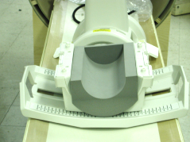
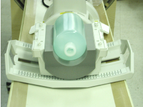
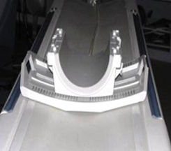
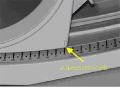
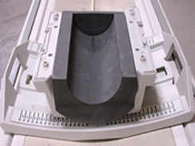
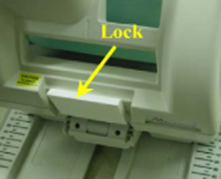
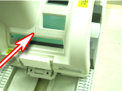
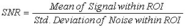

Operating Documentation
Direction 5500113, Rev# 3
Discovery MR750 3.0T Service Methods
Module Version 9.0, Version Date 8/25/10
Operating Documentation |
| Required Persons | Preliminary Reqs | Procedure | Finalization |
|---|---|---|---|
| 1 | Not Applicable | 15 mins | Not Applicable |
Follow this process to prepare for the SNR test using the HDT/R Quad Extremity Coil by Invivo. The SNR test process is the same for 1.5T catalog M3335ME and 3.0T catalog M3335LP.
| Item | Qty | Effectivity | Part# | Manufacturer | |
|---|---|---|---|---|---|
| T/R Quad Extremity Legacy Coil Phantom | 1 | Legacy Phantom Set | 5147225-3 | - | |
| T/R Quad Extremity Coil Phantom Positioner | 1 | - | 5147225-7 | - | |
| Large Cylindrical Unified Phantom | 1 | Unified Phantom Set | 5342679-2 | - | |
| Condition | Reference | Effectivity |
|---|---|---|
Coil Configuration: QUADKNEE | N/A | MR750 |
The GE HD T/R Quad Extremity Coil has one (1) coil name: HD T/R QUAD EXTREMITY, and can be used in the mode QUADKNEE . Refer to the Data Sheet in Finalization, Step 1, to understand the data required to calculate the individual element SNR. The image quality check uses two different protocols for signal and noise image acquisition. The signal scan is an FSE sequence used to minimize susceptibility and B0 inhomogeneity effects. The noise scan is a GRE sequence that has a Control Variable (do_noise) to eliminate the transmit RF completely during the scan. The signal scan must be run prior to the noise scan as the R1, R2, and TG values from the signal scan are used for the noise scan.
Remove all other surface coils from the cradle. Place the coil on the cradle as illustrated in Illustration 1. The coil should be positioned such that its cables exit towards the magnet. Remove any pads from the coil. Set the phantom positioner into the coil as seen in Illustration 1.
Illustration 1: Placement Of Posterior Section And Phantom Positioner

Center the coil within the base plate and place the phantom in the phantom positioner as shown in Illustration 2.
Illustration 2: Phantom Position

Attach the anterior portion of the coil.
Place the baseplate of the coil on the patient table as shown in Illustration 3.
Illustration 3: Baseplate of Coil on Patient Table

Align the alignment mark on the coil to zero position on the scale as shown in Illustration 4.
Illustration 4: Alignment Mark at Zero Position

Place the Phantom Positioner as shown in Illustration 5.
Illustration 5: Placement of Phantom Positioner

Place the large cylindrical unified phantom in the phantom positioner as shown in Illustration 6.
Illustration 6: Phantom Placed in the Positioner

Attach the anterior portion of the coil to the baseplate (see Illustration 7) and lock the coil (see Illustration 8
Illustration 7: Anterior Portion of Coil Attached to Baseplate

Illustration 8: Lock the Coil

From the Scan Desktop, start new scan by selecting [New Pt]. Set Patient ID to geservice and Patient Weight to 111 pounds. Click [Patient Position] to open protocols window.
At the magnet, press Alignment Light button to turn on the light. Move the cradle to align the coil to the alignment lights as shown in Illustration 9. Note the alignment markings on the coil in front of the ‘chimney’. Press “Landmark” button to landmark the alignment.
Illustration 9: Coil Alignment

Move the coil to scan position by pushing the Move to Scan button, ensuring cable does not get snagged.
At the console, set the protocols per the Signal section from Table 1, Signal and Noise Protocols. GE Service Personnel can use the Extremity SNR Signal protocol in the GE, Other protocols section.
Click [Save Series] to download the protocols, then click [Prepare to Scan].
Run [Auto Prescan]. Take note of the R1, R2 and TG values.
Run [Scan].
A signal scan must be run prior to the noise scan as the same R1, R2 and TG values must be used for both the signal and noise scans. Do not run an Auto Prescan prior to the noise scan as the values will be changed.
Copy the signal scan series. Use [Copy Series] (highlight signal series and click right mouse button) and [Paste Series] in RX Manager.
Click [View Edit] and set the protocols per the Noise section from Table 1, Signal and Noise Protocols. GE Service Personnel can use the Extremity Coil SNR Noise protocol in the GE, Other protocols section.
Click [Save Series] and click [Prepare to Scan].
Open [Display CVs] menu under [Research Operations]. Set the rhformat and do_noise CVs to 1.
Run [Manual Prescan], and do not make any changes. Verify that R1, R2, TG and Bandwidth have not changed from the previously completed signal scan, and click [Done].
Run [Scan].
Table 1: Signal and Noise Protocols
| Protocol | Signal | Noise |
| Patient Exam Information | ||
| Patient ID | geservice | geservice |
| Patient Name | ||
| Patient Weight | 111 lbs. (50 kg) | 111 lbs. (50 kg) |
| Patient Position | ||
| Patient Position | Supine | Supine |
| Patient Entry | Head First | Head First |
| Coil | HD T/R QUAD EXTREMITY | HD T/R QUAD EXTREMITY |
| Series Description | Signal | Noise |
| Imaging Parameters | ||
| Plane | Axial | Axial |
| Mode | 2D | 2D |
| Pulse Seq | FSE-XL | GRE |
| Imaging Options | Fast (or None) | None |
| PSD Name | Leave Blank | Leave Blank |
| Protocol | Leave Blank | Leave Blank |
| Scan Timing | ||
| # of Echoes | 1 | 1 |
| TE | 17 | Min Full |
| TR | 500 | 34 |
| Echo Train Length | 4 | N/A |
| Bandwidth | 15.63 | 15.63 |
| Additional Parameters | ||
| Flip Angle | N/A | 1 |
| Acquisition Timing | ||
| Freq | 256 | 256 |
| Phase | 256 | 256 |
| NEX | 1 | 1 |
| Phase FOV | 1 | 1 |
| Freq DIR | R/L | R/L |
| Auto Center Freq | Peak | Peak |
| Autoshim | On | On |
| Phase Correct | On | N/A |
| Contrast | Off | Off |
| # of Reps B4 Pause | 0 | N/A |
| Scanning Range | ||
| FOV | 20 | 20 |
| Slice Thickness | 3 | 3 |
| Spacing | 1.5 | 1.5 |
| S/I Start | 0 | 0 |
| R/L Center | 0 | 0 |
| A/P Center | 0 | 0 |
| S/I End | 0 | 0 |
| # Slices | 1 | 1 |
| Table Delta | 0 | 0 |
A circular ROI should be used for the signal measurements, and a rectangular ROI should be used for the noise measurements. The actual ROIs should be similar in shape and size to those in Illustration 11.
ROIs in both signal and noise images can be measured directly in the image browser. Click the user interface button [MEASURE], select the circular or rectangular shape, and adjust its size and orientation so that the ROI is similar to those found in Illustration 10. Mean, standard deviation, and area of the ROI will appear in the lower right corner of the image.
For the signal measurement, choose a 10 cm diameter circular ROI. This should be approximately a 5600 mm2. For the noise measurement, choose a 19 cm rectangular ROI. This should be approximately 34000 mm2. Record the values for mean signal, standard deviation of noise, and SNR in the data sheet found in Finalization, Step 1.
Individual receiver SNR is defined as the mean of data within the signal ROI divided by the standard deviation of data within the noise ROI.
Illustration 10: SNR Calculation

| NOTE: | The SNR calculation uses the MEAN of the signal image and STANDARD DEVIATION of the noise image. |
Illustration 11: Example ROIs

The SNR measurements must be greater than or equal to the following specifications:
Table 2: SNR Specifications
| Plane (if applicable) | SNR (1.5T) | SNR (3.0T) |
| HD T/R QUAD EXTREMITY Coil | 200 | Legacy
Phantom 410 Unified Phantom 207 |
Use the table provided below to record the calculated signal
to noise ratio (SNR) data obtained from the Functional Checks section.